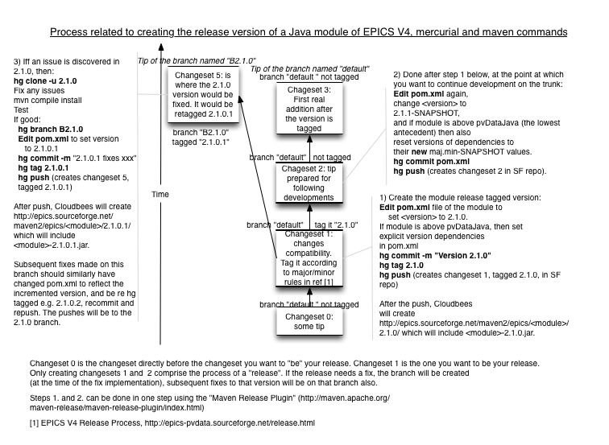

This is an EPICS v4 working group internal document giving the policies and procedures for releasing numbered versions of EPICS v4 software modules, and the process of release. It also contains a timetable and several check-lists for use during the process of creating a new version of the software.
This is the 22 September 2013 version of the EPICS V4 Core Module Development and Release Guide.
This version includes a separate section on C++ release packaging, with more detailed instructions for this with an increased emphasis on process.
The terms MUST, MUST NOT, SHOULD, SHOULD NOT, REQUIRED, and MAY when highlighted (through style sheets, and in uppercase in the source) are used in accordance with RFC 2119 [RFC2119]. The term NOT REQUIRED (not defined in RFC 2119) indicates exemption.
This document defines the policies that apply to the release of all EPICS v4 software modules released by the EPICS v4 Working Group, and the procedures that are to be followed when creating official releases of those modules.
The policies described here have been developed for and agreed by the EPICS v4 Working Group, and apply to all core software modules developed for and formally published by the group.
The procedures documented here SHOULD be followed anyone involved in making officially numbered releases of the EPICS v4 software modules.
The information given in this section relates to a specific release of the software. More details about this data can be found in the sections below.
| Package & Version | Module | Module Version | Module Owner |
|---|---|---|---|
| epicsJava 4.3.0 | pvDataJava | 3.0 | Marty Kraimer |
| pvAccessJava | 3.0 | Matej Sekoranja | |
| exampleJava | 3.0 | Greg White | |
| easyPVAJava | 0.1 | Matej Sekoranja | |
| epicsCPP 4.3.0 | pvCommonCPP | 3.0 | Matej Sekoranja |
| pvDataCPP | 3.0 | Marty Kraimer | |
| pvAccessCPP | 3.0 | Matej Sekoranja | |
| pvIOCCPP | 3.0 | Marty Kraimer | |
| exampleCPP | 3.0 | David Hickin | |
| pvaSrv | 0.9.1 | Ralph Lange |
Develop and document these policies and procedures.
The above modules currently have the following dependency relationships:
| Module | Depends on |
|---|---|
| pvDataJava | |
| pvAccessJava | pvDataJava |
| exampleJava | pvDataJava, pvAccessJava |
| easyPVAJava | pvDataJava, pvAccessJava |
| pvCommonCPP | |
| pvDataCPP | pvCommonCPP |
| pvAccessCPP | pvCommonCPP, pvDataCPP |
| pvIOCCPP | pvCommonCPP, pvDataCPP, pvAccessCPP |
| exampleCPP | pvCommonCPP, pvDataCPP, pvAccessCPP |
| pvaSrv | pvCommonCPP, pvDataCPP, pvAccessCPP, pvIOCCPP |
| Stage | Earliest Date | Length |
|---|---|---|
| Feature freeze | 2013-07-05 | 2 weeks |
| Pre-release 1 | 2013-07-19 | 2 weeks |
| Release Candidate | 2013-08-02 | 2 weeks |
| Final Release | 2013-08-16 |
| Completed | Who | Task Description |
|---|---|---|
| 2013-06-11 | WG | Nominate a Release Coordinator for the release. |
| 2013-07-09 | WG/MO | Agree which modules to include and their new version numbers. |
| Completed | Who | Task Description |
|---|---|---|
| 2013-07-09 | RC | Edit this Release Guide document for the release. Discuss modifications to the process with WG and publish. |
| 2013-07-09 | RC | Propose the date of Feature freeze. Adjust as necessary based on feedback from MDs. |
| MPs | Examine outstanding feature specifications and bug reports. With MDs decide which ones can/should be fixed in time for this release. | |
| RC | Remind MDs of the up-coming Feature freeze and monitor progress. |
| Completed | Who | Task Description |
|---|---|---|
| RC | Check repositories for missing documentation and release notes, ask MDs to correct any omissions and update any Getting Started documentation. | |
| MPs | Examine the packaging instructions in this document and any supporting scripts in the pvDataWWW/scripts directory that are used for releasing the software. Modify them as necessary, commit your changes and push them to SourceForge. | |
| WE | Create a new version-specific folder in the "Files" area of SourceForge for MPs to upload packaged files to. Edit the README file and copy it to that directory. |
| Completed | Who | Task Description |
|---|---|---|
| 2013-07-22 | RC | Cue the MPs to start packaging the ‑pren
release. |
| MPs | Follow the appropriate packaging instructions. Inform RC and WE when complete. | |
| WE | Announce pre-release to WG and core-talk mailing lists and solicit testing and feedback. | |
| ITs | Read documentation and use to build and test the software. Report bugs and provide other feedback as necessary. | |
| MDs | Fix bugs and documentation as appropriate. Inform WG about any major issues that could affect the release timetable. | |
| RC | At end of period, discuss state of release with WG, decide whether the next stage should be another pre-release or a release candidate. |
| Completed | Who | Task Description |
|---|---|---|
| RC | Cue the MPs to start packaging the ‑rcn
release. |
|
| MPs | Follow the appropriate packaging instructions. Inform RC when and WE complete. | |
| WE | Announce release candidate to tech-talk mailing list and solicit testing and feedback. | |
| MDs | Help users who have questions while trying out the software. | |
| RC | At end of period, discuss state of release with WG, decide whether the next stage should be a pre-release, another release candidate or the final release. | |
| WE | Update the SourceForge Wiki page for the project. |
| Completed | Who | Task Description |
|---|---|---|
| RC | Cue the MPs to start packaging the final release. | |
| MPs | Follow the appropriate packaging instructions. Inform RC and WE when complete. | |
| WE | Announce release to tech-talk mailing list. Make other website edits as appropriate. | |
| RC | Complete and archive the Release Guide document for this release:
hg cp release.html release_4.3.0.html hg ci release*.html hg push |
All core EPICS v4 modules are currently being packaged together and released with the same version number at the same time. The mercurial repositories of individual modules should all be tagged with the communal version number at the time of release. However bug-fix releases of individual modules should be able to be made independently of other modules without following the full process described in this document. To Do: Modify this process to cover separate release schedules for individual modules.
The group may also publish non-core software modules such as the pvaSrv module and various example programs. These are not required to match the common version number of the core software, but should still follow the numbering format and policies given below.
A version number should always take one of the following forms:
4.major.minor 4.major.minor-suffix 4.major.minor.bugfix 4.major.minor.bugfix-suffix
4.major increments at every major
release.minor increments at every minor
release, and is reset to zero whenever the major number changes.bugfix increments at every bug-fix
release, and is reset to zero whenever the minor number changes. This number and
its leading dot do not usually appear in the full version number when the number
is zero.‑suffix and its leading hyphen character are
only present in pre-release and release candidate version numbers, never in a
final official release version number.‑suffix indicates
the status of the code and is one of ‑dev (development),
‑pren (numbered pre-release) or
‑rcn (numbered release-candidate).When printing or discussing a particular version number, all the parts of
4.major.minor SHOULD always be given. The
.bugfix and/or ‑suffix parts
SHOULD be included if they they are needed to identify the specific version of
the software concerned.
The suffix ‑BETA that was included with some previous
release version numbers is confusing and MUST NOT be used in the future.
Global version number tags created in mercurial repositories should take one of these forms:
major.minor.bugfix major.minor.bugfix-suffix
The leading 4. from the official version number MUST NOT be
included in the tags created in module mercurial repositories, but the
.bugfix part MUST always be present even when the number is
zero.
Tags MUST be created in the above format to mark each of the numbered
pre-release and release-candidate versions of each module, and to mark the final
official release (with no ‑suffix).
There are two kinds of software compatibility, at the source-code level (API) and the binary level (ABI). EPICS v4 releases will provide the following compatibility promises across release boundaries:
Neither ABI nor API compatibility is promised through a major release.
Developers SHOULD list and describe all public API changes that have occurred since the last major release in the Release Notes for the module, and MUST provide full documentation for the new API (usually using Doxygen or JavaDoc). If an API change requires significant changes to code that calls that API, an example showing both before and after code should be provided in or linked from the Release Notes. Code using the older API SHOULD NOT successfully compile against the new API if it will not run properly without modification.
Any incompatible change to the pvAccess network protocol MUST trigger a major release of the software.
Forward API compatibility is promised through a minor release but not ABI compatibility, meaning that software written against the old version MUST compile and run against the new one without changing its source code; recompilation is required though. Backward API compatibility is not promised, but where there have not been any API changes an application written for a newer release SHOULD compile and run successfully against an earlier minor release version.
Developers MUST consider these compatibility requirements during minor release development. Tests SHOULD be written to check forward API compatibility for all modules where public API changes are being made, ensuring that the older methods and routines remain fully functional in the modified implementation.
Other than changes required by the bug fix, both forward and backward compatibility MUST be provided for both the API and ABI through a bugfix release. For architectures that use shared libraries, it should only be necessary to replace the original shared libraries with the new ones, without recompiling any application that uses them. For architectures that statically link libraries into binary executables the link step will have to be re-run, although in this case it may be better to just rebuild the application completely.
Developers MUST consider these compatibility requirements while fixing bugs, and MUST NOT make any modifications to the names, call signatures or semantics of public API routines or methods unless those changes are needed to bring the implementation into line with the originally-published specification. If a bug cannot be fixed without making such a change, the fix requires a new minor release instead of a bug-fix release.
Note: EPICS v4 developers do not have much experience of promising ABI compatibility. This policy may change after reviewing this experience for a time.
The following roles are used in the release process described below. Individuals may take multiple roles as necessary.
Software releases of operation-ready modules will go through all the stages below. Software that is still undergoing development may skip the release candidate stage and take a more liberal view of bug severity when taking the final release decision.
The working group or a designated Module Owner decides that a new version of the software is to be released, what changes it should contain, and whether this is to be a major, minor or bug-fix release. The release version number is agreed, and a Release Coordinator is nominated to manage the release process (where the software to be released has a single Module Owner they would normally be expected to take on the role of the Release Coordinator). The dates for feature freeze and/or the final release may be discussed, but the process of finding and fixing bugs can easily thwart a specific final release deadline.
In the period between the release decision and feature freeze, the Release Coordinator studies the process and procedures described in this document, then proposes any changes desired to the Working Group for agreement. In conjunction with the Module Developers responsible for the software, the Release Coordinator will fill in the tables below that give the timetable and checklists for the remaining stages of the release process.
Module Developers should look for any remaining bugs that can/should be fixed in this release, and provide feedback to the Release Coordinator about the release timetable.
Feature freeze occurs at a specific time and date and is thus an instantaneous event, not a period of time. After that moment, the software is said to have been frozen.
All development work on new features for this release must have been completed by the freeze date; incomplete features should have been backed out and no additional feature branches should be merged afterwards. Only bug fixes and documentation updates should normally be committed between the freeze and the final release.
After the freeze there will be a delay (normally 2 weeks but this may vary) before the first pre-release is made. Module Developers are expected to spend this period completing the documentation and testing their software to identify and fix any major bugs before the it gets published to a wider audience.
These are tagged, built and/or packaged versions of the code created by the
Module Packager(s) that the Website Editor publishes as such for testing by the
wider EPICS developer community. The first pre-release version has the suffix
‑pre1 and subsequent pre-releases if any should be numbered
sequentially. Each pre-release version is normally left open for 2 weeks, and
any significant bugs discovered in this time can result in an additional
pre-release version being created after the bugs have been fixed.
Integration Testers will attempt to build and use the software in specific environments according to its documentation, and will provide feedback and bug-reports based on this experience.
Module Developers should continue to run tests on the software in unusual configurations and on less common platforms during this period, and should also read through and fix errors and omissions in the documentation.
Once the group believes the software to be free of major bugs and fully
documented, the Release Coordinator nominates the next version to be a release
candidate, the first of which is given the suffix ‑rc1. All
release candidate versions are publicized to the wider EPICS user community for
testing, and will normally be left open for 2 weeks.
If significant bugs are discovered they must be fixed, and the Module Developers and Release Coordinator may then agree to publish another release candidate version with those fixes, or may revert to a pre-release version to ensure the bugs have been properly fixed.
Some time (usually 2 weeks) after a release candidate has been published with no major bug reports for it in that period, the final release version will be created and published. Minor bugs that have not been fixed should be documented in a list of Known Problems that accompanies the release.
The workflow given below shows how Mercurial tags are used to indicate module versions (as defined above). It includes what to do when a change must be made to a module after it has been included in a suite release (see below). The change is made on a branch. Note the naming of the branch, and the numbering of the tag (or tags) on that branch.
The process is described for Java, though C++ is a simple subset. Simply omit those aspects which refer to Maven operations, such as editing the pom.xmls.
There are basically 3 steps to the mechanics of doing a release:
The key to the automatic packaging, is that a file in pvDataWWW named RELEASE_VERSIONS specifies the Mercurial (hg) tag value of each module for each suite release package (the tar file that may be downloaded from SourceForge). In addition, the code to be included in the version MUST have a Maven version whose value is identical to the Mercurial tag. That is, this identity must hold:
[mercurial tag ==] RELEASE_VERSIONS entry == hg tag
The mercurial part is optional because it applies only to all Java modules, not the C++ ones.
Set the the module's own <version> in pom.xml of module Do not yet push, first test it with a local Maven build.
Eg set to <version>3.0.0<version> [This example must have been a MAJOR release,
since minor and patch
numbers are 0]
For all modules above pvData, you will need also to set the <version> of their dependencies. Eg pvAccess depends on pvData, so you will have also to increment the <version> specified in the pvDataJava <dependency> element.
Set the hg tag according to the API compatibility rules for version "numbering". That is, if the module is neither forward nor backward compatible (eg ABI change) that's a major update, so increment the left most number. If it's API has been changed (that is, if the signature of an entry point (ie method) has changed, that's a minor change (increment the middle number). Otherwise (neither of the above 2, then it's a patch release, increment the rightmost number). That's all, there is no subjective leeway here. Even if you've done lots of work but no ABI or API change - it's still a patch release. Eg
% hg commit
% hg tag 2.1.0
% hg push
mvn compile install [-Dmaven.test.skip=true] Verify compile and that correct LOCAL Maven repo version was created.
Eg % pwd
/Users/greg/Development/epicsV4/hg [in this example]
% cd pvDataJava/
% mvn compile install
Test local version of module. Run local tests, if any over and above those unit tests in the Maven.
If your local packaging is to include other people's module changes, first hg pull and hg update each repository you want to include.
eg % cd hg/pvDataJava
% hg pull
% hg update
% mvn compile install
Then repeat steps above for those changed repos.
Verify/edit Maven repo version numbers in your local pvDataWWW/scripts/RELEASE_VERSIONS.
Check whether other people have changed the RELEASE_VERSIONS, if so, hg pull and hg update to get a new version.
Verify that the hg tag number of the actual repo exists, and there really is a matching local Maven repo version of the same name (eg pvAccessData/3.0.3) in ~/.m2/repository/epics/.
Extract of pvDataWWW/scripts/RELEASE_VERSIONS, showing what is in EPICS-Java-4.3.0-pre2: # ================================================================= # Ev4 Release name Repo name Tag/version # ------------------ ------------ ---------------------- EPICS-Java-4.3.0-pre2 pvDataJava 3.0.2 EPICS-Java-4.3.0-pre2 pvAccessJava 3.0.3 EPICS-Java-4.3.0-pre2 easyPVAJava 0.2.1 EPICS-Java-4.3.0-pre2 exampleJava 2.1.0 EPICS-Java-4.3.0-pre2 caj 1.1.10 EPICS-Java-4.3.0-pre2 jca 2.3.6 EPICS-Java-4.3.0-pre2 directoryService 0.2.1
Run packaging from local Maven repos:
Find some directory on your computer where you can create the tar.gz file. Then execute makereleaseJars.sh from there. makereleaseJars.sh is in pvDataWWW/scripts, so you might execute it from the parent of that path. E.g.:
% hg/pvDataWWW/scripts/makereleaseJars.sh -n EPICS-Java-4.3.0-pre2 -l hg. ... % ls *.tar.gz EPICS-Java-4.3.0-pre2.tar.gz
Check your tar.gz contains what you expected (just ls the dir from which it was constructed). Check in particular the included directories, jars etc.
% ls -1 EPICS-Java-4.3.0-pre2
First, check in CloudBees to verify that all the remote modules you want to include have completed their build and have no unexpected issues.
Now re-run the packager to package from the remote files. This guarantees consistency better than packaging from local files. For example
pvDataWWW/scripts/makereleaseJars.sh -n EPICS-Java-4.3.0-pre2 -u gregorywhite
Upload the tar file created in the step above:
% rsync -a <tarfilename> \ <SFusername>,epics-pvdata@frs.sourceforge.net:/home/frs/project/e/ep/epics-pvdata/<EV4-version-num>/ Eg % rsync -a EPICS-Java-4.3.0-pre2.tar.gz \ gregorywhite,epics-pvdata@frs.sourceforge.net:/home/frs/project/e/ep/epics-pvdata/4.3.0/
Verify the file made it to our SF project files, at: https://sourceforge.net/projects/epics-pvdata/files/?source=navbar.
The C++ suite is packaged using a script which retrieves versions of the constituent modules of the release from the remote Mercurial repository according to tags specified in the release versions file (RELEASE_VERSIONS) and packages them with other files (a readme and the release versions file).
The steps for packaging a release are:
In practice the tagging of the modules will typically be done by the module owners prior to packaging and each module owner will update the versions file with the tag for their module. Subsequent steps will typically be carried out be the module packager.
Prior to carrying the last two steps, the first two steps may be carried one or more times for each module for a given release and the third may be also carried out more than once.
The version of each module that is to go into a package release (that is to say, a pre-release, release candidate or final release of a target final package release) corresponds to a Mercurial tag.
The tagged version SHOULD be a numbered release and the name of the tag SHOULD be the number of the version, so for example version 3.0.0 is tagged with "3.0.0" (not v3.0.0, V3.0.0 or any other similar variant). The numbering conventions are as described in the Java Packaging section.
Numbering of modules is independent of EPICS V4 packages. A versioned release of a module can be made as often as desired without being included in a package release. Similarly if a module does not change between EPICS V4 package releases its version number will not change.
Modules are tagged using the usual Mercurial commands. So a module is tagged as version 3.0.1 as follows:
% hg commit
% hg tag 3.0.1
% hg push
The version number tag of the version of each module that is to go into a release needs to go into the the release versions file, pvDataWWW/scripts/RELEASE_VERSIONS (and, of course, committed and pushed to the SourceForge repo).
For each package release (i.e. for each pre-release, release candidate and final release of a target final release of a package) there should be a line containing the release name, repo name and tag for each module in that release. E.g.
Extract of pvDataWWW/scripts/RELEASE_VERSIONS, showing what is in EPICS-CPP-4.3.0-pre2: # ================================================================= # Ev4 Release name Repo name Tag/version # ------------------ ------------ ---------------------- EPICS-CPP-4.3.0-pre2 pvCommonCPP 3.0.1 EPICS-CPP-4.3.0-pre2 pvDataCPP 3.0.1 EPICS-CPP-4.3.0-pre2 pvAccessCPP 3.0.2 EPICS-CPP-4.3.0-pre2 pvIOCCPP 3.0.2 EPICS-CPP-4.3.0-pre2 exampleCPP 3.0.0 EPICS-CPP-4.3.0-pre2 pvaSrv 0.9.1The file SHIULD be added to as new versions are added. Version numbers for previous releases remain in the file and SHOULD NOT be modified.
Once the module packager is ready to make a release they should indicate this through the mailing list, at which point the versions file SHOULD NOTbe modified except by the module packager until the latter reports that the release has been successfully completed.
Prior to the point of making the release, module tags for a given module may be updated multiple times, but after this point changes to module version numbers other than those by the module packager SHOULD go into the next release (e.g. if pre2 is being packaged changes must go into pre3), after the release in progress has been completed.
In particular once the tar for a version has been uploaded to the website the tags for that release SHOULD NOT be modified. Any new tag for a module SHOULD be added for the next release.
If the module packager is unable to successfully complete the release (for example due to unresolved issues in the release versions file or a build error) it MAY be permissible to reopen the version tags of the current (failed) release for modification, providing no tar has been uploaded. The module packager SHOULD indicate whether this is the case.
To aid the process, subsequent to a release the module packager may create a template for the next release with the same version numbers as the previous release. The lines for this release should be conventionally commented out, e.g. subsequent to the pre2 release of 4.3.0 the following lines can be added:
# ================================================================= # Ev4 Release name Repo name Tag/version # ------------------ ------------ ---------------------- #EPICS-CPP-4.3.0-pre3 pvCommonCPP 3.0.1 #EPICS-CPP-4.3.0-pre3 pvDataCPP 3.0.1 #EPICS-CPP-4.3.0-pre3 pvAccessCPP 3.0.2 #EPICS-CPP-4.3.0-pre3 pvIOCCPP 3.0.2 #EPICS-CPP-4.3.0-pre3 exampleCPP 3.0.0 #EPICS-CPP-4.3.0-pre3 pvaSrv 0.9.1
A module owner can then update their tag for the release, removing the comment, e.g.
EPICS-CPP-4.3.0-pre3 pvCommonCPP 3.0.2If such a template does not exist then the first module owner to add the tag for a release MAY create it.
The module owners (or indeed anyone else) MAY test the release versions by running the packaging script in pvDataWWW (see below). They may do this at any time and as often as desired. However they SHOULD NOT upload the tar or otherwise make this publicly available.
The script may be run with the -V option to use the RELEASE_VERSIONS from the same local pvDataWWW repo as the script and can be used to test the release versions prior to pushing changes.
The packaging script pulls in the readme file (pvDataWWW/scripts/README). Unless the script is run with the -V option (for testing only) the file is the one from the remote repo. If any changes are required to this they MUST therefore be pushed to the SourceForge repo prior to running the script.
The readme SHOULD NOT be modified except by the module packager once the latter has signalled they have begun making a release.
The script makereleaseCPP.sh packages the tar and can be used both by the module packager to create the release and by anyone for testing, providing the resulting tar is not made public.
To run the script ideally you should set your SourceForge account up for passwordless access (see Cheatsheet for Passwordless SSH Access to SourceForge for EPICS V4 Development).
Before running the script:
The script makereleaseCPP.sh has the following usage:
% <pathname>/makereleaseCPP.sh -n <releaseName> -u <SFusername> [-f ] [-V]
where releaseName the the name of the release that MUST match the name which appears in the release versions file and SFusername is the
SourceForge user name of the person running the script.
The -V option uses the local versions of the readme and release versions in the same repository as the script rather than the remote versions. This is for testing only and SHOULD NOT be used for creating a tar for upload/release. The -f option will delete tars and intermediate files from previously running the script. (The default is for the script to fail if these exist.)
Help can be obtained with the -h option:
% <pathname>/makereleaseCPP.sh -h
The script is run from the intended location final tar. So if the local pvDataWWW repo which you will run is in a parent
directory with "create_release" and the latter is where you want your tar, cd to create_release and run the script, for example
% ../pvDataWWW/scripts/makereleaseCPP.sh -n EPICS-CPP-4.3.0-pre2 -u dhickin
After running the script, open up the tar and examine the contents, perform any testing etc.
On beginning making a release the module packager SHOULD send an email to the mailing list announcing that they are doing so and requesting that the release versions and readme files are not altered until complete.
The module packager is responsible for what goes into the release and MAY make whatever changes they see fit to the versions file and readme.
After obtaining the tar, the module packager should satisfy themselves that the contents are correct and carry out any testing that they wish to establish the quality of the release (e.g. building the modules, running test code).
The module packager SHOULD pause or stop the process of making a release if there are unresolvable issues, such a module which does not build (when this is expected for the target), and SHOULD send a mail to inform the group and fix the issue.
If the module packager is satisfied with the release they SHOULD upload it to SourceForge and inform the mailing list. To upload, use the rsync command:
% rsync -a <tarfilename> \ <SFusername>,epics-pvdata@frs.sourceforge.net:/home/frs/project/e/ep/epics-pvdata/<EV4-version-num>/ Eg % rsync -a EPICS-CPP-4.3.0-pre2.tar.gz \ dhickin,epics-pvdata@frs.sourceforge.net:/home/frs/project/e/ep/epics-pvdata/4.3.0/
Verify the file made it to our SF project files, at: https://sourceforge.net/projects/epics-pvdata/files/?source=navbar.